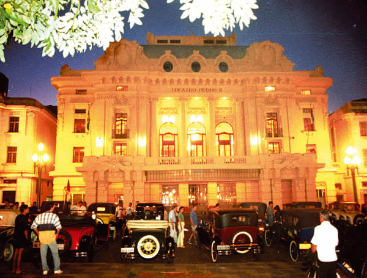

| Home |
Foi inaugurado a 8 de outubro de 1930 na cidade de Ribeirão Preto com a apresentação do filme "Alvorada do Amor". Sua designação homenageia o último imperador do Brasil, D. Pedro II. Seu projeto foi idealizado pelo engenheiro Meira Júnior e construído por iniciativa privada. Está sob administração municipal desde 1996. Tornou-se referência cultural e artística para a região de Ribeirão Preto e palco de acontecimentos políticos e sociais no passado. Em 15 de julho de 1980, um incêndio destruiu a cobertura, o forro do palco e grande parte do interior, incluindo-se o teto. No dia 7 de maio de 1982 o prédio foi tombado e sua reforma iniciada em maio de 1991. |
 |
Em agosto de 1996, na administração do prefeito Antônio Palocci Filho, o Teatro Pedro II foi reinaugurado com um concerto da Orquestra Sinfônica de Ribeirão Preto e o Coral do Teatro Colón, de Buenos Aires, apresentando a abertura Il Guarany de Antônio Carlos Gomes e a Nona Sinfonia de Ludwig van Beethoven, respectivamente sob regência dos maestros Roberto Minczuk e Isaac Karabtchevsky, contando ainda com a presença de Fernando Portari (tenor solista). Em sua nova configuração após a reforma, ocorreram várias melhorias e foi ainda criada e instalada uma nova cúpula da artista plástica Tomie Ohtake, mas todos os demais detalhes do Teatro Pedro II foram reconstruídos e restaurados de acordo com as plantas e demais dados arquitetônicos originais. Por sua excelente acústica, o Teatro Pedro II é considerado um dos melhores teatros da América Latina, destacando-se para a realização de concertos sinfônicos e em especial ópera (de acordo com seu projeto inicial), incluindo-se fosso com elevador para orquestra abrigando cerca de sessenta músicos. |
|
Geek Theory© 2012